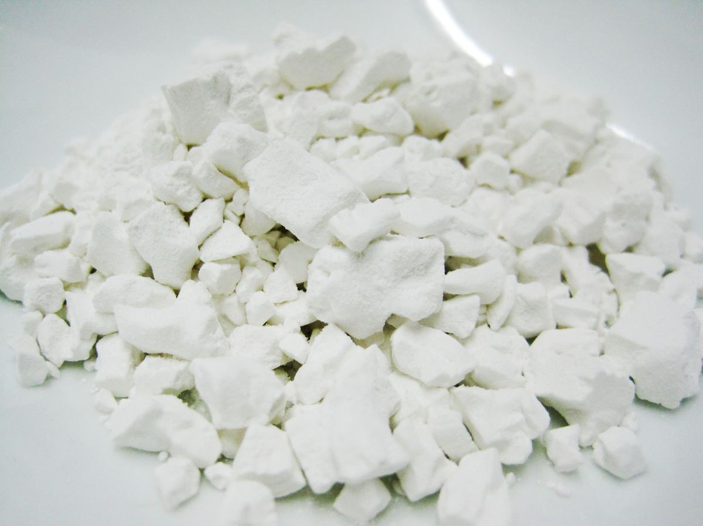
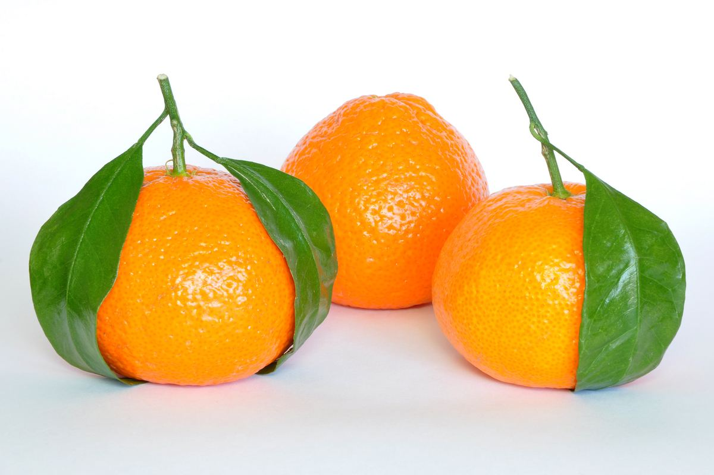
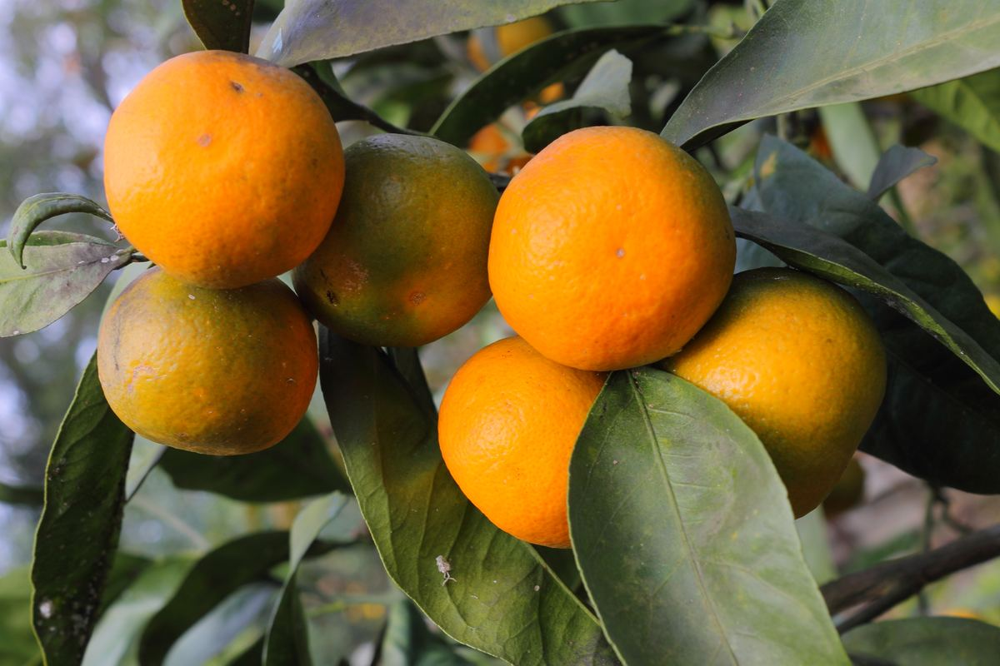

Tinh Bột Sắn Dây

Ảnh minh hoạ — sẽ thay bằng ảnh sản phẩm thật (xem nguồn ảnh)
Làm thủ công 100% tại nhà, lọc và phơi tự nhiên, không hoá chất, không chất tẩy trắng. Bán quanh năm — luôn có sẵn, đặt là giao ngay.
| Quy cách | Giá |
|---|---|
| Túi 0.5kg | 65.000đ |
| Túi 1kg | 120.000đ |
Cam Đường Canh


Ảnh minh hoạ — sẽ thay bằng ảnh vườn nhà thật (xem nguồn ảnh)
Trồng tại vườn nhà, không thúc chín. Chỉ có theo mùa (khoảng tháng 11 âm lịch – tháng 1 năm sau).
| Quy cách | Giá |
|---|---|
| Thùng 5kg | 275.000đ |
| Thùng 10kg | 500.000đ |
Đặt hàng
Nhắn trực tiếp để đặt hàng và hỏi giá cập nhật:
- Zalo: 0979 502 000
- Khu vực giao hàng: Giao hàng toàn quốc